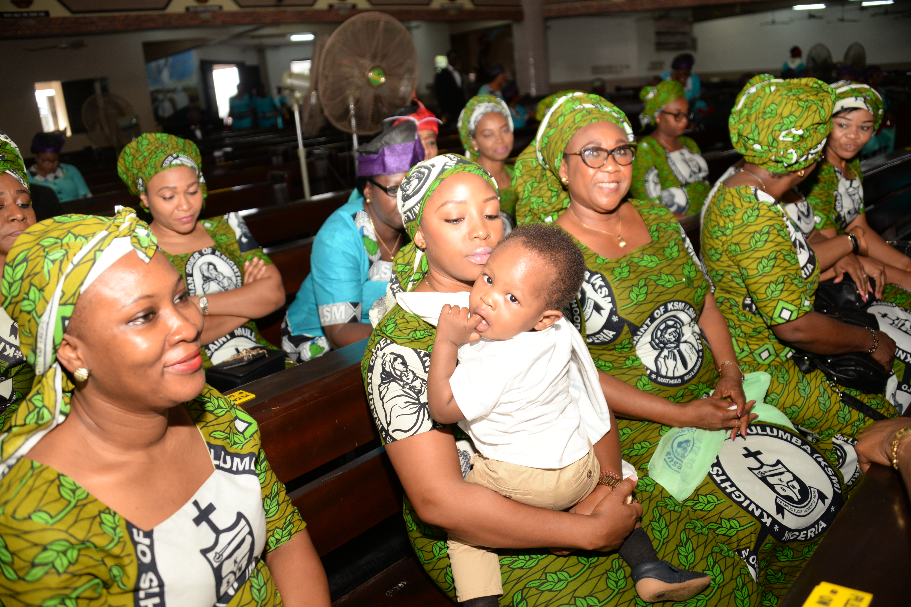

{% extends 'base.html' %}
{% block title %}Gallery{% endblock %}
{% block content %}
    <div class="row">
        <div class="col-md-12">
            {% if photos %}
            <div id="indicators" class="row carousel slide carousel-fade" data-ride="carousel">
                <div class="carousel-inner col-xl-7 col-md-12 col-sm-12 ">
                    <ol class="carousel-indicators">
                        <li data-target="#indicators" data-slide-to="0" class="active"></li>
                        
                    </ol>
                    <div class="carousel-item active">
                    
                    </div>
                    
                    <a class="carousel-control-prev" href="#indicators" role="button" data-slide="prev">
                        <span class="carousel-control-prev-icon" aria-hidden="true"></span>
                        <span class="sr-only">Previous</span>
                    </a>
                    <a class="carousel-control-next" href="#indicators" role="button" data-slide="next">
                        <span class="carousel-control-next-icon" aria-hidden="true"></span>
                        <span class="sr-only">Next</span>
                    </a>
                </div> <!-- end carousel-inner, col-md-8-->

            
            <div id="gallery_card" class="card bg-info text-dark">
                
                <!-- <div class="card-img-overlay card-footer">
                    <h6 class="card-title">Card title</h6>
                    <p class="card-text">This is a wider card with supporting text below as a natural lead-in to additional content. This content is a little bit longer.</p>
                    <p class="card-text">Last updated 3 mins ago</p>
                </div> -->
            </div>
        </div>
    </div>
{% endblock %}